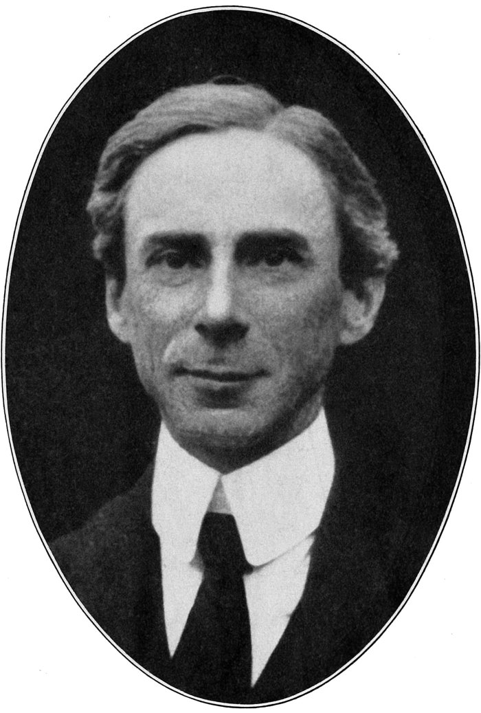
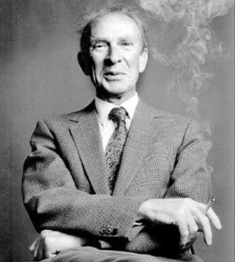
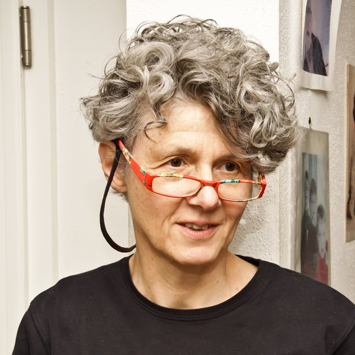

“

Trinity College Dublin
Coláiste na Tríonóide, Baile Átha Cliath
The University of Dublin
LI7862 · Linguistic Pragmatics
Week 4
Presupposition
Dr. Thomas Stephen
School of Linguistic, Speech & Communication Sciences
Semester 1 · 2026
This week
What goes without saying?
Last week. What is said and what is implicated. The Cooperative Principle, the maxims, and not all from some.
This week. What an utterance takes for granted: presupposition.
Figures: Frege · Russell · Strawson · Data: Moses and the Ark · the King of France · a barn · loaded questions · language models
Today
Empirical
- Moses
- Distorted questions
- Asserted and presupposed
- The family of sentences
- Hey, wait a minute
- Triggers
- True, false or neither
Historical
- Frege
- Russell
- Strawson
- Austin
- Heim
Formal
- Semantic presupposition
- A third value
- Two negations
- Definedness
- Three inferences
- Sorting inferences
- Semi-factives
- Soft and hard triggers
- Other notations
Applied
- Loaded questions
- Loftus (1975)
- Slogans
- Irish English sure
- Machines
This week
Readings
Grundy, P. (2008). Doing Pragmatics, 3rd ed., ch. 3 “Presupposition: accommodating background knowledge”, §§3.1–3.2. Textbook
Russell, B. (1905). On denoting. Mind 14(56), 479–493. Classical
Strawson, P. F. (1950). On referring. Mind 59(235), 320–344. Classical
I
Empirical
STRAND 01 / 04 · LI7862 · Week 4
Taken for granted
Content an utterance treats as settled.
(1)
How many animals of each kind did Moses take on the Ark?
Empirical
The Moses illusion
Noah took the animals onto the Ark, and most people answer two all the same.
Erickson & Mattson (1981). Across four questions of this kind, about half of all answers took the error on board, from people who could say afterwards who built the Ark.
The question takes it for granted that Moses took animals onto the Ark and asks only about the number. The hearer accommodates the background without checking it and answers the part that was asked.
Erickson & Mattson (1981), also Speckmann & Unkelbach (2021).
Empirical
Distorted questions
(2)In the biblical story, what was Joshua swallowed by?Jonah
(3)By flying a kite, what did Edison discover?Franklin
(4)What country was Margaret Thatcher president of?Prime minister
(5)What was the famous line uttered by Louis Armstrong when he first set foot on the moon?Neil
Erickson & Mattson's four questions drew 52% distorted answers. In a multiple-choice format with a can't say option on every item, the rate was still 49% (Speckmann & Unkelbach 2021).
(2) to (4) Speckmann & Unkelbach (2021), after Park & Reder (2004) · (5) Shafto & MacKay (2000), the Armstrong illusion.
Empirical
Asserted and presupposed
(6)When will you be back?Branka to Peter. Taken for granted: Peter is coming back.
(7)Have you got your other ticket?A ticket inspector. Taken for granted: there is another ticket.
(8)Alex stopped smoking.Taken for granted: Alex used to smoke.
Asserted. The main point of the utterance: what is put forward, asked or denied, and what a reply is expected to take up.
Presupposed. Background the speaker treats as already accepted and the hearer is expected to take on without argument: the common ground, what speaker and hearer mutually accept.
(6), (7) Grundy (2008: 48–49).
(9)
The prime minister of Belize is visiting Dublin.
(10a)
The prime minister of Belize is not visiting Dublin.
(10b)
Is the prime minister of Belize visiting Dublin?
(10c)
If the prime minister of Belize is visiting Dublin, the meeting will be rescheduled.
(10d)
Maybe the prime minister of Belize is visiting Dublin.
Empirical
The family of sentences
(10a)negation
The assertion is reversed. Still conveyed: Belize has a prime minister.
(10b)question
Nothing is asserted. Still conveyed.
(10c)antecedent of if
Nothing is asserted. Still conveyed.
(10d)possibility modal
Only a possibility is raised. Still conveyed.
Projection. Presupposed content survives embeddings that suspend the assertion.
The family of sentences: Chierchia & McConnell-Ginet (1990).
Empirical
Hey, wait a minute
(11)AThe prime minister of Switzerland is visiting Dublin.
BNo, he isn't.Denies the assertion.
BHey, wait a minute. Switzerland doesn't have a prime minister.Objects to the background, and keeps it out of the common ground.
(12)AThe person who broke the typewriter was Sam.
BHey, wait a minute. I didn't know that someone broke the typewriter.
B#Hey, wait a minute. I didn't know that Sam broke anything.
Hey, wait a minute picks out presupposed content. Aimed at the main point, as in the last reply to (12), it is odd, so the reply that comes naturally shows which part of the utterance was background.
Shanon (1976); von Fintel (2004) · (12) Fox (2010), MIT lecture notes.
Empirical
Triggers: words
Factiveregret, know, be aware
(13) His admirers regret that Shakespeare was an erratic speller. Presupposed: Shakespeare was an erratic speller.
Change of statestop, begin, take up
(14) I began jogging last summer. Presupposed: I didn't jog before.
Iterativeagain, another, too
(15) another piece of bad news for the Government Presupposed: earlier bad news.
Implicativemanage, forget
(16) Mr Cool manages to avoid doing a Henman. Presupposed: it wasn't easy.
Definite descriptionthe, possessives
(17) my dentist Presupposed: I have a dentist.
Examples from Grundy (2008: 49–55) · Factives: Kiparsky & Kiparsky (1970).
Empirical
Triggers: constructions
Temporal clausebefore, after, since
(18) After the separation of Schleswig-Holstein from Denmark, Prussia and Austria quarrelled. Presupposed: the separation happened.
Cleftit was X who
(19) It was the Scots who invented whisky. Presupposed: someone invented whisky.
Wh-question
(20) How many tickets do National Express give you? Presupposed: they give you tickets.
Counterfactualif I had
(21) If I had won the lottery on Saturday, I wouldn't be here now. Presupposed: I didn't win.
Stress
(22) Radion removes dirt AND odours. Presupposed: other powders don't remove odours.
(18) Frege (1892) · (19) to (22) Grundy (2008: 52–53).
Triggers
(23)
Berlusconi knows that he is signing the end of Berlusconism.
(24)
China has stopped stockpiling metals.
(25)
It was Jesus who set me free.
(26)
I have written to every headmaster in Rochdale.
(27)
HE set me free.
Empirical
Five triggers
(23) factiveknows
Presupposed: Berlusconi is signing the end of Berlusconism.
(24) change of statestopped
Presupposed: China used to stockpile metals.
(25) cleftit was Jesus who
Presupposed: someone set me free.
(26) quantifierevery
Presupposed: there are headmasters in Rochdale.
(27) focusstress on he
Presupposed: someone set me free.
True, false or neither
(28)
The King of France is bald.
(29)
The King of France isn't bald.
(30)
The King of France is not married to Carla Bruni.
Empirical
True, false or neither
truecan't sayfalse
(28)The King of France is bald.
3%
19%
78%
(29)The King of France isn't bald.
21%
34%
45%
(30)The King of France is not married to Carla Bruni.
72%
10%
18%
Abrusán & Szendrői (2013). 33 native speakers answered a trivia quiz with three buttons: true, false and can't say.
Strawson (1964). Strawson himself allowed that The exhibition was visited yesterday by the King of France sounds false. Whether the description is the topic of the sentence, and whether the sentence can be checked without it, both shape the judgement.
Abrusán & Szendrői (2013), Semantics & Pragmatics 6, conditions 0, 6 and 8 · Strawson (1964), Theoria 30.
II
Historical
STRAND 02 / 04 · LI7862 · Week 4
Frege, Russell & Strawson
Names, descriptions and the King of France, 1892 to 1964.
Historical
Frege

Gottlob Frege
1848 – 1925
(31)Kepler starb im Elend.Kepler died in misery. True: he died at Regensburg in 1630, on a journey to collect money the Emperor owed him.
Über Sinn und Bedeutung (1892). To assert (31) is to presuppose that the name Kepler refers to something. Frege's word for it is Voraussetzung.
(32) Kepler did not die in misery presupposes the same thing, so the presupposition is no part of the thought the sentence expresses.
A name with no reference leaves the sentence with no truth value: (33) Odysseus was set ashore at Ithaca while sound asleep.
Frege (1892), Zeitschrift für Philosophie und philosophische Kritik 100.
Historical
The will of the people
In a logically perfect language every name would refer. Ordinary language falls short of that, and some of its names refer to nothing.
Frege adds that such names lend themselves to demagogic abuse, perhaps more easily than ambiguity does, and gives (34) as his example: an expression with no generally accepted reference.
(34)der Wille des VolkesThe will of the people.
Frege (1892).
Historical
Russell

Bertrand Russell
1872 – 1970
On Denoting (1905). Grammatical form misleads, and logical form settles truth. Ramsey later called the paper that paradigm of philosophy.
(35)The present King of France is bald.
(36)The present King of France is not bald.
By excluded middle, (35) or its negation must be true. Yet if we listed the bald things and then the things that are not bald, the King would appear on neither list. Hegelians, who love a synthesis, will probably conclude that he wears a wig.
Russell (1905), Mind 14 · Ramsey (1931), The Foundations of Mathematics.
Historical
Russell's analysis
\(\exists x\,\bigl(K(x) \wedge \forall y\,(K(y) \rightarrow y = x) \wedge B(x)\bigr)\)
(35): there is exactly one King of France, and he is bald
Existence
\(\exists x\,K(x)\): there is a King of France.
Uniqueness
\(\forall y\,(K(y) \rightarrow y = x)\): at most one.
Predication
\(B(x)\): he is bald.
With no King, the existence conjunct is false, so (35) is false and every sentence keeps one of two truth values.
Historical
Russell on negation
(36)The present King of France is not bald.
Primary occurrencedescription outside
\(\exists x\,\bigl(K(x) \wedge \forall y\,(K(y) \rightarrow y = x) \wedge \neg B(x)\bigr)\)
False: there is no King.
False: there is no King.
Secondary occurrencenegation outside
\(\neg\exists x\,\bigl(K(x) \wedge \forall y\,(K(y) \rightarrow y = x) \wedge B(x)\bigr)\)
True.
True.
This is Russell's answer to the negation test: (36) is ambiguous, and on the reading where the whole description sits under the negation it is simply true.
Historical
Strawson

P. F. Strawson
1919 – 2006
St John's. Strawson read PPE at St John's, Oxford, from 1937 to 1940, with Grice among his tutors.
Oxford. Fellow of University College from 1948 and Waynflete Professor of Metaphysical Philosophy from 1968 to 1987. Knighted in 1977.
Searle. John Searle wrote his DPhil (1959) under Austin and Strawson, on problems in the theory of meaning arising from sense and reference.
Stanford Encyclopedia of Philosophy, Peter Frederick Strawson · Philosophy Now 171.
Historical
On Referring (1950)
Strawson's answer to Russell: a sentence is neither true nor false. A use of it on an occasion makes a statement, and the statement is what has a truth value. The same sentence, (35), used at different times:
1624
Louis XIII
Bald at 23 and in a wig from then on. (35) true.
1660
Louis XIV
At 21, his own hair still long. (35) false.
1848
Louis-Philippe
Abdicates on 24 February. The last king.
1905
Russell
No king. The description refers to nothing.
1950
Strawson
No king. A use of (35) makes no statement.
Said today there is no king, so there is no statement with a truth value, and the question of truth or falsity does not arise. Saying (35) implies that there is a king of France in some sense of ‘imply’, which Strawson distinguishes from entailment.
Strawson (1950), Mind 59 · Louis XIII, bald at 23 and in a wig from 1624.
Historical
Austin on presupposition in speech acts
(37)All Jack's children are bald.Said when Jack has no children.
Both (37) and Jack's children are not bald presuppose that Jack has children. With none, Austin's verdict is that the utterance is void, the same verdict he gives a performative that misfires.
Austin's own comparison is with purporting to bequeath something you do not own.
Austin (1962), How to Do Things with Words, pp. 20 and 48–51.
Historical
Heim on definites and indefinites

Irene Heim
born 1954
The Semantics of Definite and Indefinite Noun Phrases (1982). Heim's dissertation treats a discourse as a file of cards. An indefinite introduces a new card, the novelty condition; a definite picks up a card already in the file, the familiarity condition.
(38)A dog came in. The dog barked.A opens the card; the presupposes it.
(39)The dog barked.Out of the blue, no card to pick up: the presupposition fails.
On this view the presupposition carried by the is familiarity. Russell's description picks out the one entity that fits it; Heim's definite picks out the entity already under discussion.
Heim (1982), University of Massachusetts, Amherst · Heim (1983), “File change semantics and the familiarity theory of definiteness”.
III
Formal
STRAND 03 / 04 · LI7862 · Week 4
Truth-value gaps
Presupposition as a condition on having a truth value.
Formal
Semantic presupposition
\[ S \text{ presupposes } p \quad\text{iff}\quad S \models p \;\text{ and }\; \neg S \models p \]
Strawson (1952); Levinson (1983: ch. 4)
A sentence presupposes p when p is true whenever the sentence is true and whenever it is false. So (8) presupposes that Alex used to smoke, which holds whether Alex stopped or not; if Alex never smoked, (8) is neither true nor false.
\[ \sem{S} \text{ is defined only if } p \]
the notation used here; \(\sem{S} = \#\) when p fails
Formal semantics writes the same idea as a condition on the sentence having a value at all: a definedness condition on \(\sem{S}\), with \(\#\) for the missing value (Heim & Kratzer 1998).
Formal
A third value
\[ S \models p, \quad \neg S \models p, \quad \models S \vee \neg S \quad\Longrightarrow\quad \models p \]
with two values, a presupposition would be true in every situation
With two truth values, either S or its negation is always true, so if both entail p then p is true everywhere and a presupposition could only ever be a tautology. France has a king is contingent. Either (35) entails it and its negation does not, which is Russell's position, or there is a third value, which is Frege's and Strawson's.
Frege makes the same argument in prose. Were Kepler refers part of the content of (31), then (32) would mean that Kepler did not die in misery or that Kepler refers to nothing, which is plainly wrong.
Łukasiewicz (1920). The first three-valued logic, and much of the later work on many-valued logics, is Łukasiewicz's. He spent the last decade of his life in Dublin, as Professor of Mathematical Logic at the Royal Irish Academy from 1946 until his death in 1956.
Levinson (1983: 175–176) · Frege (1892) · Łukasiewicz (1920), Ruch Filozoficzny 5.
Formal
Two negations
| \(A\) | \(\neg A\)internal | \(\sim\! A\)external |
|---|---|---|
| 1 | 0 | 0 |
| 0 | 1 | 1 |
| # | # | 1 |
Internal negation. A gap stays a gap, so (28) and (29) both come out \(\#\) when there is no king.
External negation. True unless A is true, so It is not true that the King of France is bald comes out 1.
Russell gets the same two readings with two values, as the two scopes of (36).
Internal and external negation: Levinson (1983: ch. 4).
Formal
Metalinguistic negation
(40)The King of France isn't bald: there is no King of France.
(41)I didn't manage to trap two mongeese: I managed to trap two mongooses.
Metalinguistic negation. A negation that objects to how something was put: to a presupposition in (40), to a word form in (41), or to an implicature. A correction follows and the intonation is marked; without the correction, (40) is odd.
This is the sense in which Grundy calls presuppositions defeasible: they can be cancelled or denied (2008: 55), but only by a negation of this kind.
Horn (1985), Language 61 · Grundy (2008: 55).
Formal
Presupposition as definedness
\[ \sem{\text{the King of France}} \;=\; \begin{cases} \text{the King of France} & \text{if France has exactly one king} \\ \text{undefined} & \text{otherwise} \end{cases} \]
\[ \sem{(28)} \;=\; \begin{cases} 1 & \text{if the King of France is bald} \\ 0 & \text{if he is not} \\ \# & \text{if there is no unique King of France} \end{cases} \]
The presupposition is a definedness condition on the meaning of the description, and the sentence inherits it. Heim & Kratzer write the condition into the function itself, as \(\lambda x : \varphi.\ \psi\), a function defined only where \(\varphi\) holds.
Heim & Kratzer (1998), ch. 4.
Formal
Three inferences
From (8) or (42)NegatedCancelled
Entailment
(8) entails: Alex doesn't smoke now
lost
contradiction
Presupposition
(8) presupposes: Alex used to smoke
survives
only by denial, as in (40)
Implicature
(42) Some of the students passed implicates: not all did
changes
fine: in fact, all did
Entailment, presupposition or implicature
(43)
Martha regrets drinking John's home brew. → Martha drank John's home brew.
(44)
John managed to open the door. → John opened the door.
(45)
John managed to open the door. → John tried to open the door.
(46)
Mary used to live in Dublin. → Mary no longer lives in Dublin.
(47)
It was Henry that kissed Rosie. → Someone kissed Rosie.
(48)
John didn't stop smoking. → John still smokes.
(49)
Only Rosie passed. → Rosie passed.
(50)
Rosie has three children. → Rosie has no more than three children.
Formal
Semi-factives
(51)If I discover later that I have not told the truth, I will confess it to everyone.
(52)If I regret later that I have not told the truth, I will confess it to everyone.
Semi-factives. Discover, realise, find out and know are factive in a plain assertion, but the presupposition gives way in a conditional, a question or the first person: in (51) I may well have told the truth. With regret, be glad and be odd it stays, so (52) presupposes that I have not told the truth.
Not all factive presuppositions are equally strong. Grundy's regret in (13) is the strong kind; the SEP's knows in (23) is the weaker kind.
Karttunen (1971), Papers in Linguistics 4; the discover and regret pair as usually cited.
Formal
Soft and hard triggers
(53)I don't know whether John participated in the race, but if he won he must be very happy.
(54)??I don't know whether John read the letter. But if Mary read it too, let's ask her to be discreet about the content.
Soft and hard triggers. Win presupposes taking part, and (53) suspends that without strain; too and clefts resist, and (54) is odd. Abusch's reading is that soft presuppositions look pragmatic and hard ones conventional.
Abrusán (2016) argues that there is no categorical split and derives the difference from how each trigger interacts with its context.
After Abusch (2002, 2010) · Abrusán (2016), Natural Language Semantics 24.
Formal
Other notations
In this moduleIn the readings and elsewhere
\(\sem{S}\) defined only if \(p\)S presupposes p
\(S \gg p\) or \(S >\!\!> p\) Levinson, Huang · \(\partial p\) the presupposition operator: Beaver · \(\langle p \rangle\) round the presupposed content: Grundy · \(\rightarrow p\) under the example: the SEP entry · \(\lambda x : \varphi.\ \psi\) Heim & Kratzer
\(\#\)no truth value
undefined · \(u\) or \(\tfrac{1}{2}\) in three-valued logics · also # for an infelicitous example
\(\neg A\) \(\sim\! A\)internal, external
narrow and wide scope · primary and secondary occurrence: Russell
Triggers: words, constructionstrigger classes
Yule: existential, factive, non-factive, lexical, structural, counterfactual · Karttunen: factives and semi-factives · Abusch: soft and hard
IV
Applied
STRAND 04 / 04 · LI7862 · Week 4
Presupposition in use
Loaded questions, slogans, Irish English sure, and language models.
Applied
Loaded questions
(55)Have you stopped beating your wife?The textbook loaded question: yes and no both grant the background.
Westminster, 2019. Asked when he knew his advice to the Prime Minister was untrue, the Attorney General called it a when did you stop beating your wife question and said he did not accept the premise. He apologised for the phrase the same day.
Leading questions. Questions that supply their own background. Courts restrict them when a party examines its own witness.
The assumptive close. Sales training's version is an alternative question, Did you want the basic kit or the enhanced system?
House of Commons, 25 September 2019 · Hopkins, Sales Closing For Dummies.
Write a question your neighbour cannot answer with yes or no without conceding something false.
Factiveregret, know, be aware
Change of statestop, begin, take up
Iterativeagain, another, too
Implicativemanage, forget
Definite descriptionthe, possessives
Temporal clausebefore, after, since
Cleftit was X who
Wh-questionwhen, why, how many
Counterfactualif I had
Stressdirt AND odours
Applied
Loftus (1975)
(56)How fast was the white sports car going when it passed the barn while traveling along the country road?There was no barn in the film.
(57)Did you see a barn?
150 students watched a film of a car accident, and half were asked (56) straight afterwards. A week later all of them were asked (57), and the bars show the share answering yes. Loftus's own term for the barn is a false presupposition in the first question.
Loftus & Zanni (1975). Did you see the broken headlight? drew more yes answers than Did you see a broken headlight?, whether or not the item was in the film.
Loftus (1975), Cognitive Psychology 7, Experiment 3 · Loftus & Zanni (1975), Bulletin of the Psychonomic Society 5.
Applied
Slogans
(58)Take back control.Vote Leave, 2016
(59)Make America Great Again.Trump campaign, 2016
(60)Build Back Better.Biden campaign, 2020
Iteratives. Back and again presuppose an earlier state: control once held, greatness once had, something once built. The contested claim arrives as common ground, and a hearer who wants to dispute it has to say Hey, wait a minute.
Applied
Irish English sure
(61)[B]ut sure its only a penny after allAn Irish emigrant letter.
(62)but a[h] Hellen d[ea]r sure you have it more in your power in every respect than I haveAn Irish emigrant letter.
Irish English sure stands at the start or end of a clause and is unstressed. It signals expected consensus: the speaker offers the content as already in the common ground. It is attested in emigrant letters from at least the 1760s.
Amador-Moreno & McCafferty (2015); McCafferty & Amador-Moreno (2019), from the Corpus of Irish English Correspondence.
(63)
How old is the king of France?
Applied
Machines
Answer (63) with 65 and the false belief stays in place; answer Wait a minute, there is no king of France and the common ground is repaired. Lachenmaier, Sieker & Zarrieß (2025) open with this pair.
Yu et al. (2023). 25% of 8,400 Reddit questions carry a false presupposition.
Kim et al. (2021). In Natural Questions, a set of real Google queries, about 21% of the unanswerable questions trace to unverifiable presuppositions, as in Which linguist invented the lightbulb? Users prefer answers that point out the failure.
Yu, Min, Zettlemoyer & Hajishirzi (2023), ACL · Kim, Pavlick, Karagol Ayan & Ramachandran (2021), ACL.
Applied
Loaded questions to machines
(64)Did the voters discover that the CDU/CSU is in favour of replacing the euro with a German national currency?Factive discover; the presupposition is false. Asked in German.
Modelacceptsunclearrejects
GPT-4o
41%
21%
38%
Llama-3-8B
31%
48%
21%
Mistral-7B
64%
26%
10%
Lachenmaier, Sieker & Zarrieß (2025). Models seldom say wait a minute, even when they answer the direct question correctly, and the authors trace part of the failure to face-saving. On 585 patient questions about cancer with false presuppositions, no model fully corrected more than 43% (Zhu et al. 2025).
Lachenmaier, Sieker & Zarrieß (2025), ACL, Table 2 · Zhu et al. (2025), Cancer-Myth.